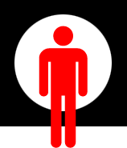

10 stellingen die bepalen welke kandidaat bij u past

zoek een kandidaat door de opties aan en uit te vinken




Wie kies jij?
Stichting Het Nieuwe Stemmen heeft voor u Wie Kies Jij? ontwikkeld. Met deze stemhulp kunt u, nadat u (ongeveer) heeft bepaald welke partij u uw stem zal krijgen, eenvoudig bepalen wie van de kandidaten het best bij u past.
Stellingen
De stemhulp bestaat uit 10 pagina's met een of meerdere korte vragen die u kunt beantwoorden .......

Hier komen dan percentages te staan

Hier dus nieuws van een kandidaat (of al het nieuws?)

En hier is plaats gereserveerd voor leuke statistiekjes